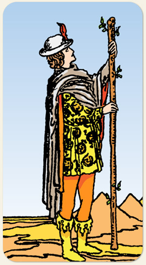

A semente da inspiração, o mensageiro do entusiasmo e a descoberta de novas paixões. Indica uma alma inquieta que busca aventura e autodescoberta através da ação. É a carta da curiosidade vibrante, do otimismo contagiante e do potencial criativo que ainda não foi testado, marcando uma fase de exploração, notícias empolgantes e a coragem de ser quem se é.
A materialização do fogo, muita energia. Não é um naipe intelectual, a pena vermelha em sua testa aparece também no Louco, no Sol e na Morte. Neste Arcano, ela representa muita energia.
Positivo: Pessoas com muita energia, atletas, dinamismo, jovialidade, empolgação, pessoas que entregam tudo, que vão longe com sua vontade e que não medem esforços.
Negativo: Inconsequência, zero pensamento estratégico, inquietude, impulsividade extrema, começa e não termina, impaciente, irritativo, entra em rixas, se arrisca demais, violento, desejo sexual descontrolado, imprevisível, tem um pavio curto e dificuldade em ouvir não.
Símbolos: Segurar Com as Duas Mãos, O Olhar Direcionado para o Topo, Salamandras, Pena Vermelha, Terreno Árido, Céu Límpido, Pirâmides.
Cores: Vermelho, Amarelo, Laranjado, Azul.